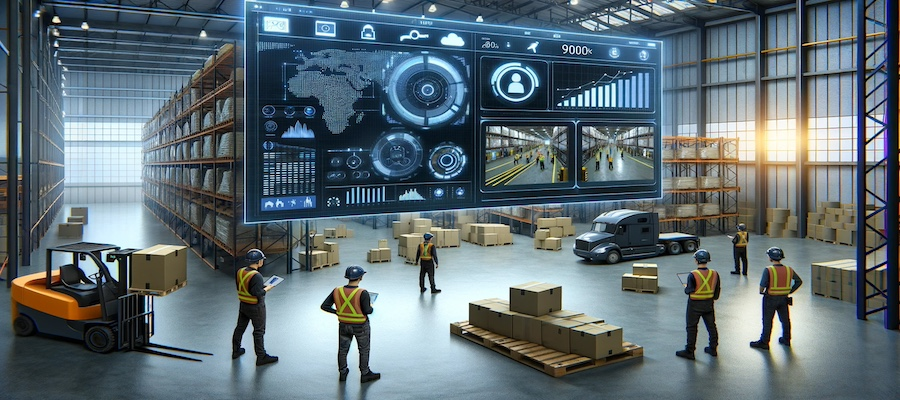

Home
HUB
Tower
Sentinel
Safety Copilot™
Resources
Resources
How Securade.ai Safety Copilot Transforms Worker Safety with AI
Transform Cameras with Securade.ai: Effortless AI Upgrade
AI-Driven Fire Safety: Revolutionizing Workplace Security
AI and EHS Management: Collaborating for Enhanced Workplace Safety
Top 5 Safety Challenges in the Oil and Gas Industry and How Securade.ai Addresses Them
Advancing Workplace Safety: AI Video Analytics for Accident Reduction
Working at Heights Safety: Video Analytics Revolution in Construction
Enhancing Workplace Safety: A Guide to Building a Behavioral Safety Culture
AI-Driven Worker Safety in Manufacturing: Insights from Securade.ai's Video Analytics
Revolutionizing Workplace Safety
The Role of AI in Near Miss Reporting
Maximizing Efficiency: Top 10 KPIs Achieved with Securade.ai on Construction Sites
Maximizing Safety with AI: Explore the Cutting-Edge Features of Securade.ai Edge App
AI-Enhanced Safety: Preventing Falls at Construction Sites
Next-Level Surveillance: Generative AI's Role in High-Risk Industry Safety
Advanced Video Analytics: Transforming Worker Safety in Logistics

AI in Emergency Response: Improving Situational Awareness and Decision-Making
AI in Emergency Response: Improving Situational Awareness and Decision-Making
Proactive Safety Management: AI Video Analytics Revolution
Introducing Securade.ai Tower: Revolutionizing Construction Safety
Optimizing Multi-Site Security with AI-Powered Video Surveillance
Enhancing Preschool Safety: Singapore's CCTV Initiative
AI Revolution in Construction: Enhancing Safety in Danger Zones
AI in Manufacturing: Transforming Quality Control & Inspection
1
2
3